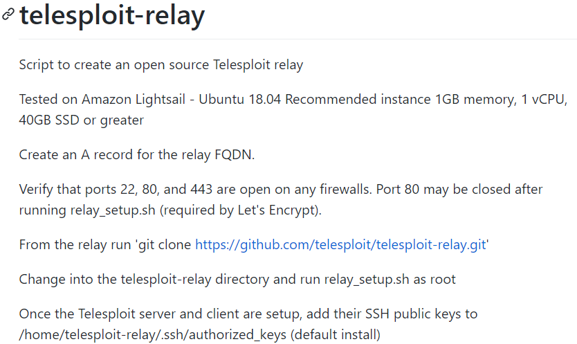
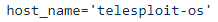
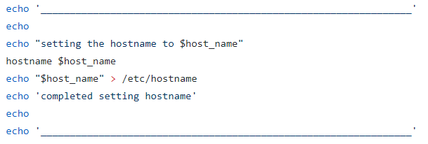

1. Telesploit Relay
Github site:
https://github.com/telesploit/telesploit-relay

Setting the name of the relay machine, as known to applications that run locally(telesploit-relay/relay_setup.sh)

